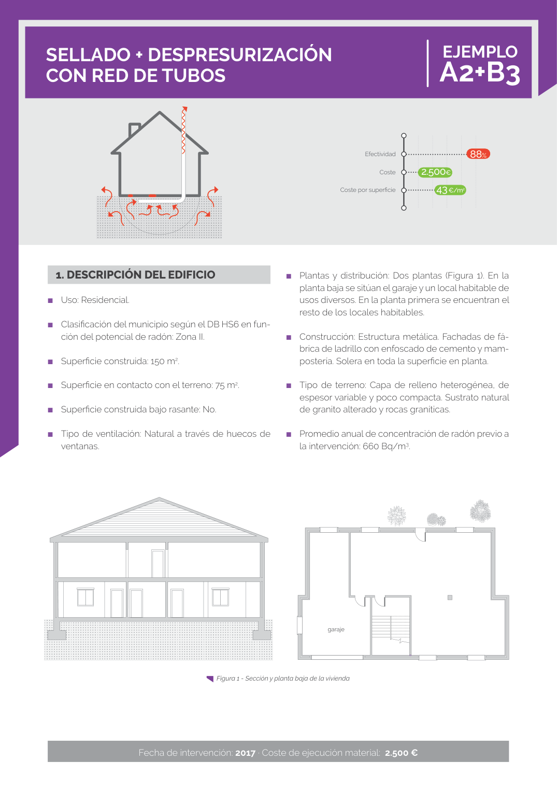

GUIA · Ejemplo A2+B3 - Sellado + Despresurizacion con red de tubos · versión sin-fecha · capa guia
Formatos: JSON compacto · Markdown · PDF fuente
Ámbito del documento · texto del ámbito · documento y tablas
Tipo: tablas, figuras · nivel 1 · sección estimada: Ejemplo A2+B3 - Sellado + Despresurizacion con red de tubos · padre:
Fecha de intervención: 2017 · Coste de ejecución material: 2.500 €

PDF fuente redistribuible: copia fiel enlazada en esta página (SHA256 verificado).